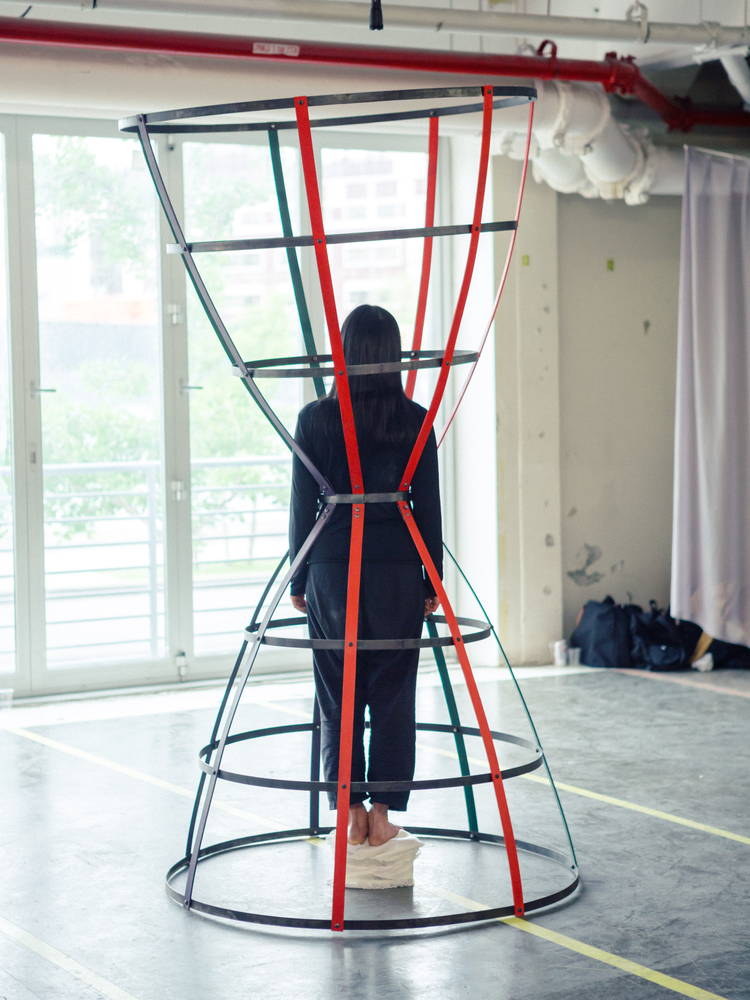
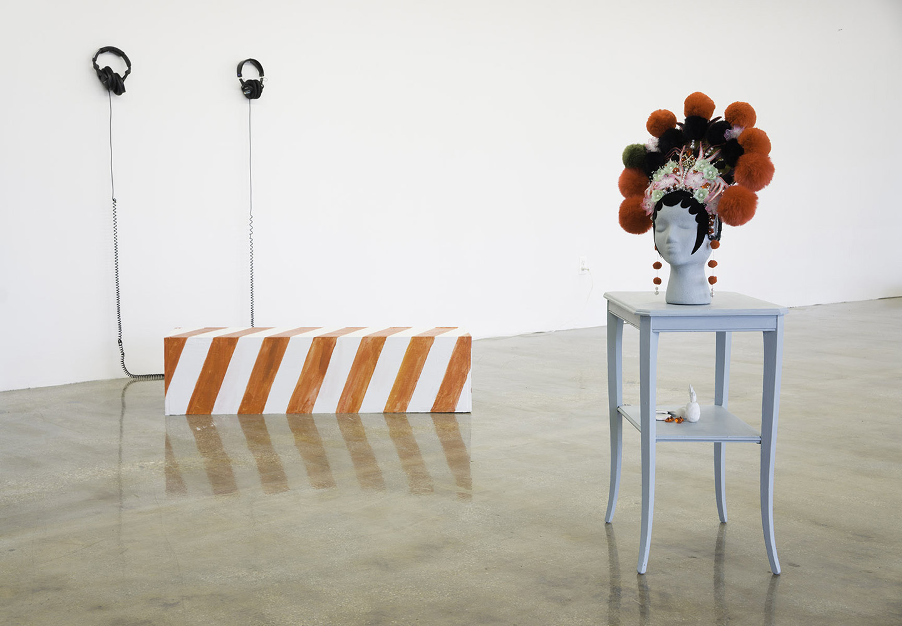
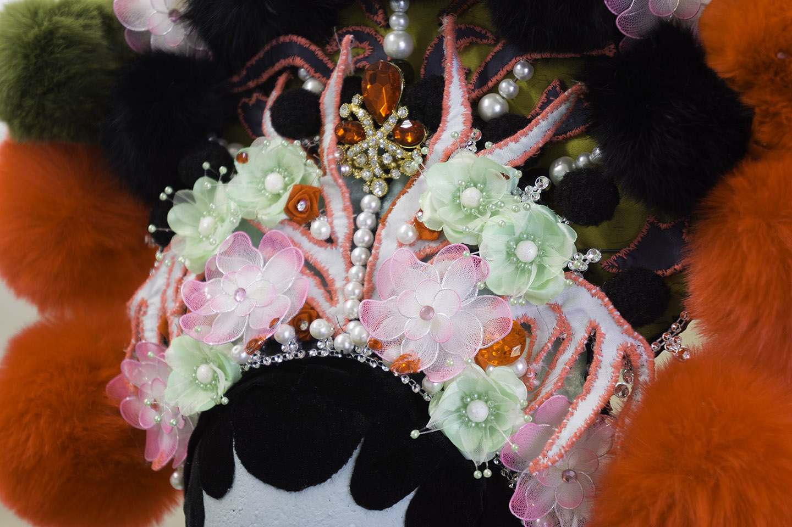
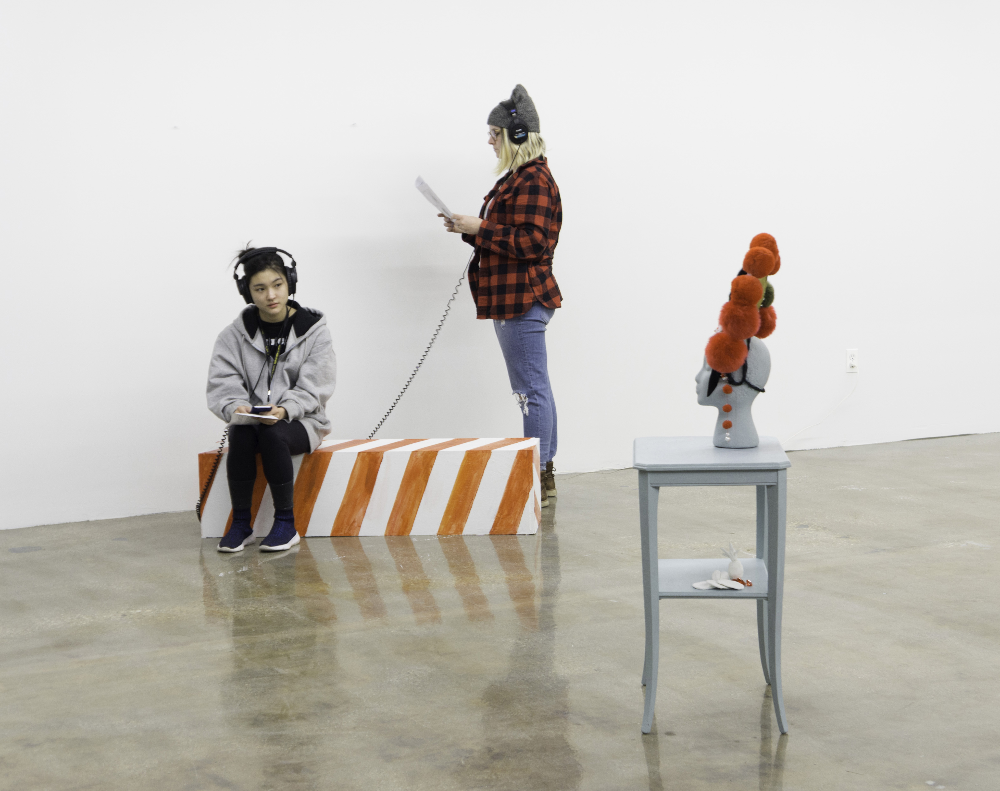
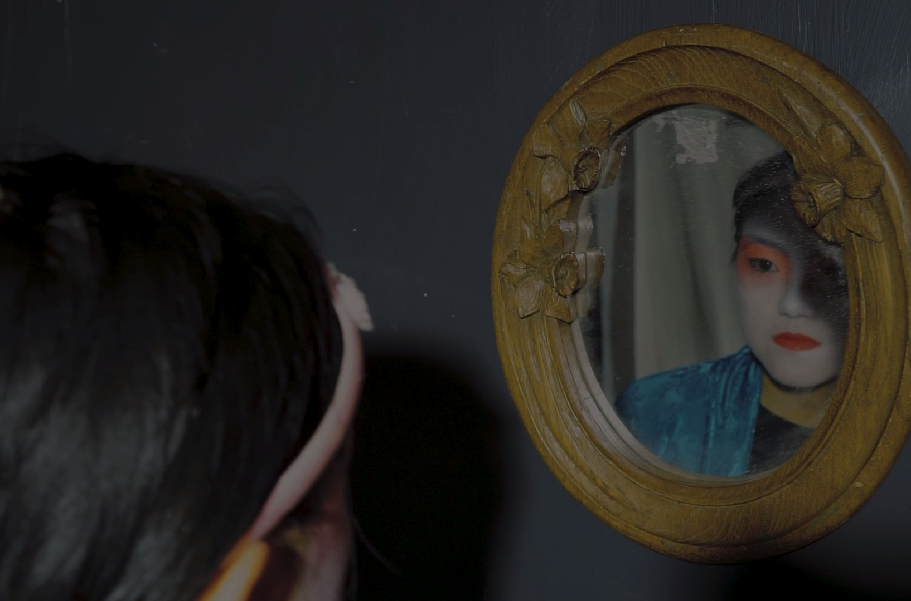

CAGE PIECE
Steel, wood, latex paint
84"h x 40"d
Performed at 'Lust for Life: A Wedding'
in Brooklyn, NY, 2018.
I conducted research on pyramidal numbers and other mathematical structures, which moved me to create a piece that might lend my body a degree of structural purity. 'Cage Piece' is an hourglass form made of welded steel and wood which references hoop skirts and cages whilst providing the wearer a sense of personal space. During the reception of 'Lust for Life: a wedding', I spent an hour standing silently in the piece before being released ceremonially to begin a performance with 7 brides.
The piece calls into question the notion of freedom, often symbolized by a cage from which one escapes. It confines and demobilizes, but protects and provides structure and an intimate space for introspection as well.
PC Daniel Terna and Amel Aki Puric



PARLOUR ROOM
Installation with painted wood bench, painted styrofoam head with headdress, sound composition
First exhibited in 'Object Lessons,' Brooklyn, NY, 2018
Next exhibited in the 'Chautauqua School of Art Emerging Artists Show,' Chautauqua, NY, 2019
Parlour Room is an installation featuring a Peking opera headdress made with dollar-store goods, a found table, and sculpted fruit, opposite a bench where viewers listen to an audio soundscape through headphones. I constructed the soundscape using recordings of my mother singing Peking opera, my own humming along to pop icon Charli XCX, muscle-memory renditions of Chopin's Fantasie-Impromptu on my childhood Baldwin, and field recordings.



MAKE ON MAKE OFF
Single channel video
Total run time 5:22
2018
a meditation on the face I wear and the one I believe in
